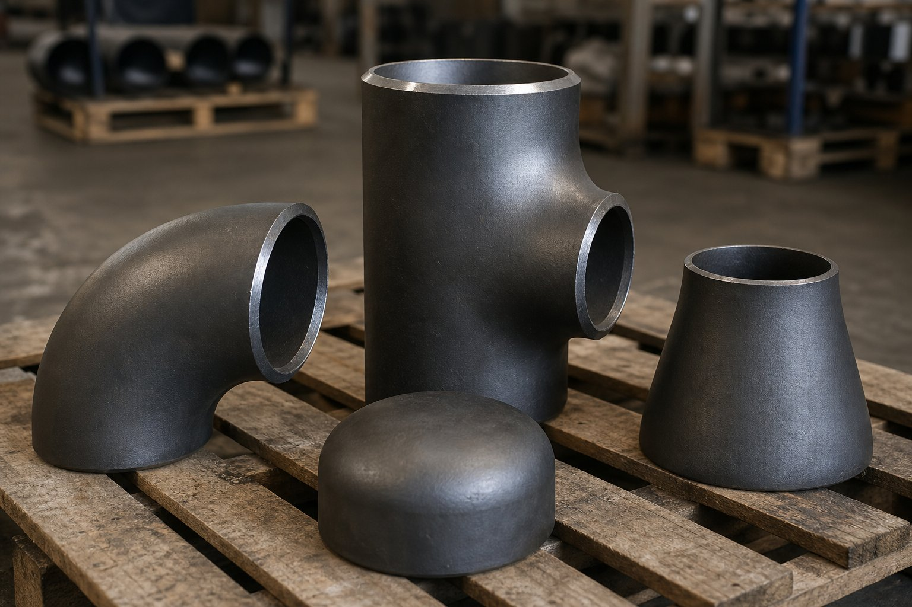

دامنه کاربرد استاندارد اتصالات جوشی
استاندارد اتصالات جوشی لببهلب (ASME B16.9) ابعاد و تلرانسهای اتصالات جوشی لببهلب فولادی را از سایز نیم اینچ تا ۴۸ اینچ پوشش میدهد: زانوهای ۴۵ و ۹۰ درجه با شعاع بلند و کوتاه، سهراهیهای برابر و تبدیلدار، تبدیلهای هممرکز و غیرهممرکز، و درپوشها. ضخامت دیواره اتصال باید با ضخامت لوله همبند هماهنگ باشد و حداقل ضخامت در هیچ نقطهای از حد مجاز کمتر نشود.

انواع اتصال و کاربرد آنها
| اتصال | کاربرد | نکته انتخاب |
|---|---|---|
| زانو ۹۰ بلند | تغییر مسیر اصلی خطوط | افت فشار کمتر؛ پیشفرض خطوط فرایندی |
| زانو ۹۰ کوتاه | تغییر مسیر در فضای محدود | فضای کمتر اما افت فشار بیشتر |
| زانو ۴۵ | تغییر مسیر ملایم | معمولاً شعاع بلند |
| سهراهی برابر | انشعاب همسایز | در خطوط اصلی و فرعی |
| سهراهی تبدیلدار | انشعاب با سایز متفاوت | کاهش نیاز به تبدیل جداگانه |
| تبدیل هممرکز | تغییر سایز در خطوط عمودی | حفظ محور مشترک |
| تبدیل غیرهممرکز | تغییر سایز در خطوط افقی | طرف تخت بالا در مکش پمپ |
| درپوش | بستن انتهای خط | برای نقطه کور بازرسی یا توسعه آتی |
ابعاد کلیدی و تلرانسها
- مرکز تا انتها: فاصله محور تا انتهای اتصال، مبنای طراحی ایزومتریک و برش لوله است.
- قطر خارجی: باید با تلرانس محدود با قطر خارجی لوله همبند جفت شود.
- ضخامت دیواره: حداقل ضخامت در هیچ نقطهای نباید از ۸۷٫۵ درصد ضخامت اسمی کمتر باشد.
- پخ جوش: پیشفرض ۳۷٫۵ درجه (طبق استاندارد پخزنی — ASME B16.25)؛ برای دیوارههای ضخیم، پخ مرکب در سفارش مشخص میشود.
- خارجی از گردی: در اتصالات بزرگتر، بیضوی بودن انتهای اتصال محدود شده تا مونتاژ میدانی ممکن باشد.
متریالهای رایج
اتصالات کربنی معمولاً از فولاد کربنی (مطابق استاندارد مواد اتصالات) ساخته میشوند که پرکاربردترین متریال خطوط فرایندی است. برای سرویس دمای پایین از متریالهای کربنی ضربهخورده، برای دمای بالا و فشار قوی از آلیاژهای کروم-مولیبدن و برای سرویس خورنده از گریدهای استنلس استفاده میشود. انتخاب متریال اتصال باید دقیقاً با متریال لوله و الزامات تست ضربه در دمای طراحی هماهنگ باشد.
نکات بازرسی و کنترل کیفیت
- کنترل ابعاد مرکز تا انتها و قطر خارجی با نمونهبرداری از هر محموله.
- اندازهگیری ضخامت دیواره در نقاط بحرانی پشت زانو و سهراهی.
- بررسی پخ و لبهها از نظر ضربه و ترک.
- تطابق شماره ذوب روی اتصال با گواهی مواد.
- در سرویس ترش، رعایت الزامات سختی و عملیات حرارتی پس از جوشکاری.
نکات خرید برای مهندس تدارکات
- اسچول یا ضخامت دقیق دیواره را در استعلام ذکر کنید؛ عبارت «ضخامت سنگین» مبهم است.
- برای مکش پمپها نوع غیرهممرکز و جهت طرف تخت را مشخص کنید.
- درپوشها را با کاربری موقت یا دائم مشخص کنید؛ ضخامت درپوش موقت میتواند کمتر باشد.
- گواهی مواد نوع ۳٫۱ با شماره ذوب حکشده درخواست کنید.
- بستهبندی و حفاظت پخها در حمل را در قرارداد قید کنید.
جمعبندی
اتصالات جوشی لببهلب جزئی بهظاهر ساده اما بسیار حساس هستند؛ عدم تطابق ضخامت یا متریال آنها با لوله، نقطه ضعف کل خط محسوب میشود. با استعلام دقیق و بازرسی ابعادی و متالورژیکی، از یکپارچگی خط لوله اطمینان حاصل کنید.
سوالات رایج
شعاع خم زانوی بلند چقدر است؟
شعاع مرکز تا مرکز زانوی بلند برابر یک و نیم برابر سایز اسمی است؛ زانوی کوتاه شعاعی برابر یک برابر سایز اسمی دارد. زانوی بلند افت فشار کمتر و خمش بهتری دارد و در اکثر خطوط فرایندی ترجیح داده میشود.
چرا در مکش پمپ از تبدیل غیرهممرکز استفاده میشود؟
برای جلوگیری از جمع شدن هوا در خط مکش، تبدیل غیرهممرکز با سمت تخت در بالا نصب میشود تا حباب هوا پشت پره پمپ تجمع نکند و کاویتاسیون ایجاد نشود.
پخ جوش اتصالات چه زاویهای دارد؟
پیشفرض پخ جوش اتصالات لببهلب ۳۷٫۵ درجه مطابق استاندارد پخزنی (ASME B16.25) (ASME B16.25) است؛ برای دیوارههای ضخیم یا آلیاژهای خاص ممکن است پخ مرکب یا زاویه متفاوت در سفارش مشخص شود.
اتصال جوشی بدون درز بهتر است یا با درز؟
هر دو در صورت تطابق با استاندارد قابل قبولاند؛ در سایزهای کوچک و فشارهای بالا معمولاً اتصال بدون درز و در سایزهای بزرگ اتصال ساختهشده از ورق یا لوله درزدار با بازرسی کامل جوش استفاده میشود.
مطالب مرتبط
- راهنمای اتصالات فیتینگ پایپینگ
- استاندارد فلنجهای جوشی
- اتصالات فیتینگ جوشی ساکت و رزوهای
- متریال اتصال کربنی (ASTM A234 WPB)
- اسچول لوله و ضخامت دیواره
در استعلام اتصال، نوع، سایز، اسچول یا ضخامت دیواره، متریال و گواهی مواد را ذکر کنید. برای زانو و تبدیل، بلند یا کوتاه بودن شعاع و هممرکز یا غیرهممرکز بودن باید صریح باشد.
مشاهده صفحه محصول ← ثبت RFQ همین محصولتامین این تجهیزات را به پیشرو تجهیز فرتاک بسپارید
شرکت پیشرو تجهیز فرتاک تامینکننده تخصصی تجهیزات صنعتی برای پروژههای نفت، گاز، پتروشیمی، فولاد و نیروگاهی است. برای دریافت پیشنهاد فنی و قیمت، استعلام (RFQ) خود را ثبت کنید تا کارشناسان مهندسی فروش در کوتاهترین زمان پاسخ دهند.
- تامین اتصالات پایپینگزانو، سهراهی، تبدیل و درپوش با گواهی مواد
- تامین تجهیزات پایپینگلوله، فلنج و اتصالات مطابق مدارک پروژه